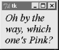
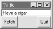
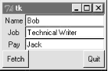
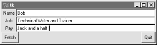
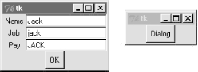

| I l@ve RuBoard |
|
7.6 Message and EntryThe Message and Entry widgets allow for display and input of simple text. Both are essentially functional subsets of the Text widget we'll meet later -- Text can do everything Message and Entry can, but not vice versa. 7.6.1 MessageThe Message widget is simply a place to display text. Although the standard showinfo dialog we met earlier is perhaps a better way to display pop-up messages, Message splits up long strings automatically and flexibly, and can be embedded inside container widgets anytime you need to add some read-only text to a display. Moreover, this widget sports over a dozen configuration options that let you customize its appearance. Example 7-16 and Figure 7-21 illustrate Message basics; see a Tk or Tkinter reference for other options it supports. Example 7-16. PP2E\Gui\tour\message.pyfrom Tkinter import *
msg = Message(text="Oh by the way, which one's Pink?")
msg.config(bg='pink', font=('times', 16, 'italic'))
msg.pack()
mainloop()
Figure 7-21. A Message widget at work7.6.2 EntryThe Entry widget is a simple, single-line text input field. It is typically used for input fields in form-like dialogs, and anywhere else you need the user to type a value into a field of a larger display. Entry also supports advanced concepts such as scrolling, key bindings for editing, and text selections, but it's simple to use in practice. Example 7-17 builds the input window shown in Figure 7-22. Example 7-17. PP2E\Gui\tour\entry1.pyfrom Tkinter import *
from quitter import Quitter
def fetch():
print 'Input => "%s"' % ent.get() # get text
root = Tk()
ent = Entry(root)
ent.insert(0, 'Type words here') # set text
ent.pack(side=TOP, fill=X) # grow horiz
ent.focus() # save a click
ent.bind('<Return>', (lambda event: fetch())) # on enter key
btn = Button(root, text='Fetch', command=fetch) # and on button
btn.pack(side=LEFT)
Quitter(root).pack(side=RIGHT)
root.mainloop()
Figure 7-22. entry1 caught in the actOn startup, the entry1 script fills the input field in this GUI with the text "Type words here" by calling the widget's insert method. Because both the Fetch button and the Enter key are set to trigger the script's fetch callback function, either user event gets and displays the current text in the input field, using the widget's get method: C:\...\PP2E\Gui\Tour>python entry1.py Input => "Type words here" Input => "Have a cigar" We met the <Return> event earlier when we studied bind; unlike button presses, these lower-level callbacks get an event argument, so the script uses a lambda wrapper to ignore it. This script also packs the entry field with fill=X to make it expand horizontally with the window (try it out), and calls the widget focus method to give the entry field input focus when the window first appears. Manually setting the focus like this saves the user from having to click the input field before typing. 7.6.2.1 Programming Entry widgetsGenerally speaking, the values typed into and displayed by Entry widgets are set and fetched with either tied "variable" objects (described later in this chapter), or with Entry widget method calls like this: ent.insert(0, 'some text') # set value value = ent.get() # fetch value (a string) The first parameter to the insert method gives the position where the text is to be inserted. Here, "0" means the front because offsets start at zero, and integer 0 and string '0' mean the same thing (Tkinter method arguments are always converted to strings if needed). If the Entry widget might already contain text, you also generally need to delete its contents before setting it to a new value, or else new text will be simply added to the text already present: ent.delete(0, END) # first, delete from start to end ent.insert(0, 'some text') # then set value The name END here is a preassigned Tkinter constant denoting the end of the widget; we'll revisit it in Chapter 8 when we meet the full-blown and multiple-line Text widget (Entry's more powerful cousin). Since the widget is empty after the deletion, this statement sequence is equivalent to the prior: ent.delete('0', END) # delete from start to end
ent.insert(END, 'some text') # add at end of empty text
Either way, if you don't delete the text first, new text inserted is simply added. If you want to see how, try changing the fetch function to look like this -- an "x" is added at the front and end of the input field on each button or key press: def fetch():
print 'Input => "%s"' % ent.get() # get text
ent.insert(END, 'x') # to clear: ent.delete('0', END)
ent.insert(0, 'x') # new text simply added
In later examples, we'll also see the Entry widget's state='disabled' option, which makes it read-only, as well as its show='*' option, which makes it display each character as a * (useful for password-type inputs). Try this out on your own by changing and running this script, for a quick look. Entry supports other options we'll skip here too; see later examples and other resources for additional details. 7.6.2.2 Laying out input formsAs mentioned, Entry widgets are often used to get field values in form-like displays. We're going to create such displays often in this book, but to show you how this works in simpler terms, Example 7-18 combines labels and entries to achieve the multiple-input display captured in Figure 7-23. Example 7-18. PP2E\Gui\Tour\entry2.py# use Entry widgets directly and layout by rows
from Tkinter import *
from quitter import Quitter
fields = 'Name', 'Job', 'Pay'
def fetch(entries):
for entry in entries:
print 'Input => "%s"' % entry.get() # get text
def makeform(root, fields):
entries = []
for field in fields:
row = Frame(root) # make a new row
lab = Label(row, width=5, text=field) # add label, entry
ent = Entry(row)
row.pack(side=TOP, fill=X) # pack row on top
lab.pack(side=LEFT)
ent.pack(side=RIGHT, expand=YES, fill=X) # grow horizontal
entries.append(ent)
return entries
if __name__ == '__main__':
root = Tk()
ents = makeform(root, fields)
root.bind('<Return>', (lambda event, e=ents: fetch(e)))
Button(root, text='Fetch',
command=(lambda e=ents: fetch(e))).pack(side=LEFT)
Quitter(root).pack(side=RIGHT)
root.mainloop()
Figure 7-23. entry2 (and entry3) form displaysThe input fields here are just simple Entry widgets. The script builds an explicit list of these widgets to be used to fetch their values later. Every time you press this window's Fetch button, it grabs the current values in all the input fields and prints them to the standard output stream: C:\...\PP2E\Gui\Tour>python entry2.py Input => "Bob" Input => "Technical Writer" Input => "Jack" You get the same field dump if you press the Enter key any time this window has the focus on your screen -- this event has been bound to the whole root window this time, not to a single input field. Most of the art in form layout has to do with arranging widgets in a hierarchy. This script builds each label/entry row as a new Frame attached to the window's current TOP; labels are attached to the LEFT of their row, and entries to its RIGHT. Because each row is a distinct Frame, its contents are insulated from other packing going on in this window. The script also arranges for just the entry fields to grow vertically on a resize, as in Figure 7-24. Figure 7-24. entry2 (and entry3) expansion at work7.6.2.3 Going modal againLater on this tour, we'll see how to make similar form layouts with the grid geometry manager too. But now that we have a handle on form layout, let's see how to apply the modal dialog techniques we met earlier to a more complex input display like this. Example 7-19 uses the prior's makeform and fetch functions to generate a form and prints its contents much as before. Here, though, the input fields are attached to a new Toplevel pop-up window created on demand, and an OK button is added to the pop-up window to trigger a window destroy event. As we learned earlier, the wait_window call pauses until the destroy happens. Example 7-19. PP2E\Gui\Tour\entry2-modal.py# must fetch before destroy with entries
from Tkinter import *
from entry2 import makeform, fetch, fields
def show(entries):
fetch(entries) # must fetch before window destroyed!
popup.destroy() # fails with msgs if stmt order is reversed
def ask():
global popup
popup = Toplevel() # show form in modal dialog window
ents = makeform(popup, fields)
Button(popup, text='OK', command=(lambda e=ents: show(e)) ).pack()
popup.grab_set()
popup.focus_set()
popup.wait_window() # wait for destroy here
root = Tk()
Button(root, text='Dialog', command=ask).pack()
root.mainloop()
When run, pressing the button in this program's main window creates the blocking form input dialog in Figure 7-25, as expected. Figure 7-25. entry2-modal (and entry3-modal) displaysBut there is a subtle danger lurking in this modal dialog code: because it fetches user inputs from Entry widgets embedded in the popped-up display, it must fetch those inputs before destroying the pop-up window in the OK press callback handler. It turns out that a destroy call really does destroy all the child widgets of the window destroyed; trying to fetch values from a destroyed Entry not only doesn't work, but generates a host of error messages in the console window -- try reversing the statement order in the show function to see for yourself. To avoid this problem, we can either be careful to fetch before destroying, or we can use Tkinter variables, the subject of the next section. 7.6.2.4 Tkinter "variables"Entry widgets (among others) support the notion of an associated variable; changing the associated variable changes the text displayed in the Entry, and changing the text in the Entry changes the value of the variable. These aren't normal Python variable names, though -- variables tied to widgets are instances of variable classes in the Tkinter module library. These classes are named StringVar, IntVar, DoubleVar, and BooleanVar; you pick one based on the context in which it is to be used. For example, a StringVar class instance can be associated with an Entry field, as demonstrated by Example 7-20. Example 7-20. PP2E\Gui\Tour\entry3.py# use StringVar variables and layout by columns
from Tkinter import *
from quitter import Quitter
fields = 'Name', 'Job', 'Pay'
def fetch(variables):
for variable in variables:
print 'Input => "%s"' % variable.get() # get from var
def makeform(root, fields):
form = Frame(root) # make outer frame
left = Frame(form) # make two columns
rite = Frame(form)
form.pack(fill=X)
left.pack(side=LEFT)
rite.pack(side=RIGHT, expand=YES, fill=X) # grow horizontal
variables = []
for field in fields:
lab = Label(left, width=5, text=field) # add to columns
ent = Entry(rite)
lab.pack(side=TOP)
ent.pack(side=TOP, fill=X) # grow horizontal
var = StringVar()
ent.config(textvariable=var) # link field to var
var.set('enter here')
variables.append(var)
return variables
if __name__ == '__main__':
root = Tk()
vars = makeform(root, fields)
Button(root, text='Fetch',
command=(lambda v=vars: fetch(v))).pack(side=LEFT)
Quitter(root).pack(side=RIGHT)
root.bind('<Return>', (lambda event, v=vars: fetch(v)))
root.mainloop()
Except for the fact that this script initializes input fields with the string "enter here", it makes a window identical in appearance and function to that created by script entry2 (see Figure 7-23). For illustration purposes, the window is laid out differently -- as a Frame containing two nested subframes used to build the left and right columns of the form area -- but the end result is the same when displayed on screen. The main thing to notice here, though, is the use of StringVar variables. Rather than use a list of Entry widgets to fetch input values, this version keeps a list of StringVar objects that have been associated with the Entry widgets like this: ent = Entry(rite) var = StringVar() ent.config(textvariable=var) # link field to var Once you've tied variables like this, changing and fetching the variable's value: var.set('text here')
value = var.get()
will really change and fetch the corresponding display's input field value.[1] The variable object get method returns as a string for StringVar, an integer for IntVar, and a floating-point number for DoubleVar.
Of course, we've already seen that it's easy to set and fetch text in Entry fields directly, without adding extra code to use variables. So why the bother about variable objects? For one thing, it clears up that nasty fetch-after-destroy peril we met in the prior section. Because StringVars live on after the Entry widgets they are tied to have been destroyed, it's okay to fetch input values from them long after a modal dialog has been dismissed, as shown in Example 7-21. Example 7-21. PP2E\Gui\Tour\entry3-modal.py# can fetch values after destroy with stringvars
from Tkinter import *
from entry3 import makeform, fetch, fields
def show(variables):
popup.destroy() # order doesn't matter here
fetch(variables) # variables live on after window destroyed
def ask():
global popup
popup = Toplevel() # show form in modal dialog window
vars = makeform(popup, fields)
Button(popup, text='OK', command=(lambda v=vars: show(v)) ).pack()
popup.grab_set()
popup.focus_set()
popup.wait_window() # wait for destroy here
root = Tk()
Button(root, text='Dialog', command=ask).pack()
root.mainloop()
This version is the same as the original (shown in Example 7-19 and Figure 7-25), but show now destroys the pop-up before inputs are fetched through StringVars in the list created by makeform. In other words, variables are a bit more robust in some contexts because they are not part of a real display tree. For example, they are also associated with checkboxes, radioboxes, and scales, to provide access to current settings and link multiple widgets together. Almost coincidentally, that's the topic of the next section. |
| I l@ve RuBoard |
|